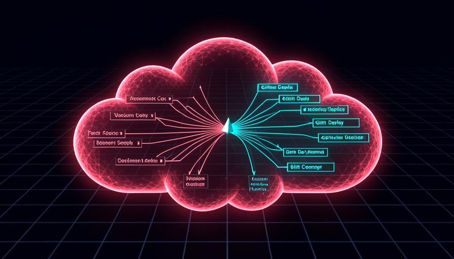
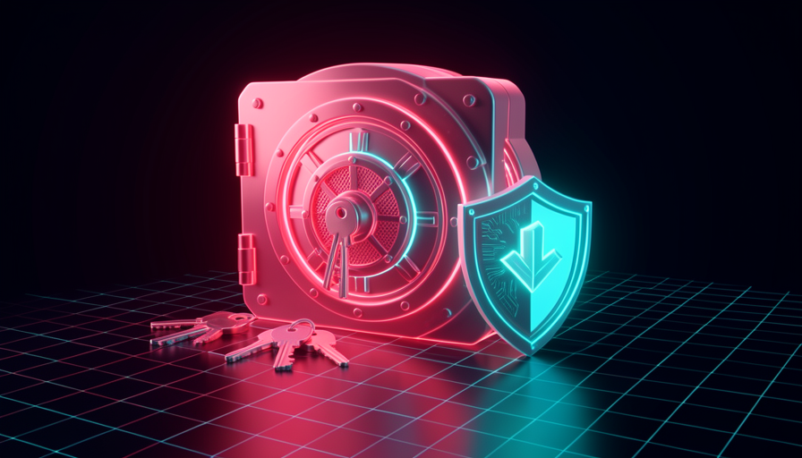

O caminho da trilha 6: o código sobe para a nuvem (GitHub + Trigger.dev), é blindado (segredos e RLS) e ganha robustez e monetização — o salto final de protótipo para produto.
Mapa da trilha
Conteúdo detalhado

🚀 GitHub & Trigger.dev
Os dois pilares de uma automação hospedada: o GitHub como armazenamento de código na nuvem (commit, push, histórico) e o Trigger.dev como motor de execução (sem timeout, retries, traces, alertas). Inicializar o projeto, agendar com cron e ler o dashboard.
Armazenamento de código na nuvem: o deploy puxa de lá (não da sua máquina), você acessa de qualquer lugar e tem histórico para reverter.
É o pré-requisito da hospedagem: plataformas de deploy integram direto com o repo.
Repo = pasta do projeto; commit = snapshot; push = enviar à nuvem.
A ferramenta de linha de comando do GitHub (gh) autentica e conecta o projeto; o .gitignore lista o que nunca deve subir — a regra de ouro é o .env.
Um .env vazado é um segredo vazado; o .gitignore é a primeira linha de defesa.
gh auth login; .gitignore; segredo fora do repo.
O motor de execução na nuvem: roda tarefas sem timeout, com retries automáticos, trace de cada passo e alertas de falha. Como um assistente confiável, não um post-it.
É o que fecha o "agentic gap" — dá visibilidade quando a IA não está mais assistindo.
Roda TypeScript (a IA escreve); MCP oficial; dev vs prod.
Instalar o MCP oficial, copiar o Project ID e rodar o init — que cria o trigger.config.ts e a pasta de tasks; o dev sobe o worker local.
Com o MCP, você gerencia o projeto conversando; sem ele, cai no terminal.
init interativo; reiniciar após instalar MCP; Project ID.
Um padrão de 5 campos (minuto, hora, dia-do-mês, mês, dia-da-semana) que define quando a tarefa roda. 0 7 * * * = todo dia às 7h.
É o que faz a automação rodar sem você presente — escala além do "aparecer e disparar".
5 campos; * = qualquer; */5 = a cada 5.
A janela para a produção: lista de runs, traces (cada linha = um passo), payload/output, seção de schedules, queues e alertas, e dois ambientes (dev e prod).
Como a IA não está mais assistindo, o dashboard é onde você vê o que aconteceu.
Run = execução; trace = passo a passo; teste em dev, libere em prod.
A disciplina de construir já preparado para deploy: o "um prompt inicial para reinar sobre todos" pede inputs fixos, saída estruturada, tratamento de erro e log desde o começo.
Em produção a IA não conserta sozinha; o que não foi pedido no prompt não vem de graça.
Deploy desde o 1º prompt; loop commit → push → deploy; verificar a run.

🔐 Secrets & Segurança
Como manter chaves e dados a salvo: variáveis de ambiente (local vs nuvem), .env.example e leitura via process.env, OAuth & refresh token, as regras de ouro dos segredos, Row-Level Security para isolar dados, auditoria de segurança e por que um app aberto é um risco financeiro.
O segredo fica armazenado fora do código e é injetado só na hora de rodar — então o código nunca contém a chave.
É o mecanismo que separa "o que é público" (código) de "o que é secreto" (chaves).
Segredo externo; injeção em runtime; código sem chave embutida.
Localmente os segredos vivem no .env; na nuvem, no dashboard de Environment Variables (Trigger.dev/Vercel), que injeta em runtime. O Trigger.dev não lê o .env local.
Esquecer de adicionar a chave em produção é a falha que "só aparece em prod".
Dois ambientes (dev e prod); checar ambos; nuvem não lê .env local.
Um .env.example lista as chaves SEM valores (seguro de commitar); o código lê os valores via process.env, nunca os escreve direto.
Documenta quais segredos o projeto precisa sem expor nenhum deles.
.env.example = só os nomes; process.env = leitura; nada hard-coded.
OAuth delega acesso a um serviço (ex.: Google) sem expor sua senha; o refresh token renova o acesso sozinho. Quando o fluxo padrão falha, um script de terminal gera o token.
É como agentes hospedados acessam Sheets, Drive e Gmail sem você logar toda vez.
Client ID/secret; refresh token; fallback via terminal.
As três regras inegociáveis: nunca cole chaves no chat da IA, nunca commite o .env, e rotacione/regenere chaves (idealmente chaves distintas para local e produção).
Uma chave de API é como acesso a um cartão de crédito: vazou, alguém gasta por você.
Chave = cartão; .gitignore; rotacionar e separar dev/prod.
Row-Level Security: regras que vivem no próprio banco (Supabase) e impedem um usuário de ver dados de outro — mesmo que exista um bug no frontend.
É uma camada extra: o banco protege os dados independentemente do app.
Regra no banco; isolamento por usuário; defesa em profundidade.
Pedir à IA que aja como especialista de segurança e verifique: rotas protegidas, nenhuma chave exposta no frontend, segredos só em env vars e RLS habilitado.
Antes de deixar o app em produção, uma auditoria explícita pega o que passou.
Checklist de 4 pontos; contexto limpo; corrigir o que falhar.
Um app sem autenticação na internet pode ser disparado por qualquer um com a URL — e cada disparo consome a sua chave de IA. Você paga pelo uso dos outros.
Justifica adicionar login (Supabase) e limites de uso antes de divulgar.
URL pública = porta aberta; autenticação; limite de uso.
🛡️ Confiabilidade & Monetização
O que separa "funciona uma vez" de "confiável e lucrativo": o agentic gap revisitado, logging significativo, try/catch em chamadas externas, retries com backoff (vs bugs de lógica), alertas de falha, o loop humano de debug e monetização com Stripe (produto, webhook, assinaturas, freemium).
Uma vez no ar por agenda/evento, a IA não está mais lendo erros e consertando: a tarefa roda mas não se adapta sozinha. Esse é o agentic gap.
É a razão de embutir erro e log desde o 1º prompt — não dá para contar com a auto-cura.
Roda mas não adapta; visibilidade via plataforma; loop humano.
Logs específicos em cada etapa relevante: "a busca retornou 429 na fonte 3", não "a tarefa falhou". A mensagem precisa ser acionável.
Log vago é inútil; log com contexto é o que torna o erro diagnosticável.
Específico > genérico; contexto (status, fonte); cada passo.
Envolver cada chamada de API externa em try/catch: registrar o erro com contexto, continuar onde der, e só "lançar" (throw) em falhas críticas.
É o que faz a tarefa escrever uma linha parcial em vez de travar quando uma API falha.
try/catch por chamada; continuar; throw só no crítico.
Configurar a tarefa para tentar de novo (ex.: até 3 vezes, com backoff exponencial começando em 30s). Retries resolvem problemas transitórios de API — não bugs de código.
Saber a diferença evita repetir eternamente um erro que nunca vai passar.
Backoff exponencial; transitório vs lógico; limite de tentativas.
Configurar no dashboard alertas de falha por e-mail, Slack ou webhook — escolhendo ambiente e tipo de falha. Leva menos de dois minutos.
Você quer saber da quebra antes do usuário final perceber.
Canal de alerta; por ambiente; toda task deve ter alerta.
A IA ainda depura, só não automaticamente: você abre o trace vermelho, copia o erro, cola na IA ("aqui está o trace que falhou, o que está errado?"), aplica o fix e re-deploya.
É o substituto da auto-cura — diagnóstico rápido, mas com um humano passando o erro.
Trace vermelho; copiar e colar; redeploy e testar.
Adicionar pagamentos com Stripe e virar um SaaS freemium: tier grátis (ex.: 2 usos/dia) e tier pago (ex.: $29/mês ilimitado) via Stripe Checkout, com webhook ouvindo os eventos de assinatura.
Fecha a transição de "só um workflow" para um produto que gera receita e limita o seu custo.
4 chaves (publishable, secret, price ID, webhook secret); freemium; tabela de assinaturas.